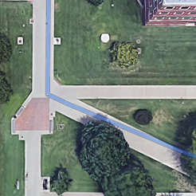
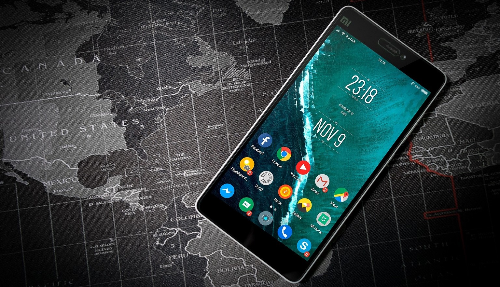

Better Navigation
An Android app that helps the blind navigate outdoors in an untraditional way
Navigating when you can't see
Navigating when you're blind isn't easy, especially when you're in an unfamiliar place. While mobile phones show promise as a potential aid to the blind, most current navigation apps were not developed for the blind. Digital solutions like Google Maps suffer severely from missed turns and lack of specificity in the instructions.
The Better Navigation app changes that. Using clock-based directions, the app is able to give the user-specific and concise instructions. "Go 10 o'clock in about 12 steps" is much clearer than "turn left in 9 meters." During testing with blindfolded users, the Better Navigation app helped the users get to their destination about 16% faster than when using Google Maps - and that number doesn't account for critical assists. What are critical assists? When navigating, some of the users strayed so far off the route that we had to step in and take them back to the right path. This happened at least once for each user when using Google Maps, but only once for one user while testing our app.
What's next?
Right now, the Better Navigation app is being merged into another app: CityGuide.
CityGuide is an app that also supports indoor navigation for the blind when used in conjuction with Bluetooth beacons placed throughout a building.
It is currently under development by a graduate student at Wichita State University.
Want to know more about Better Navigation? Click here to see our poster.
FAQs
Where was this project done?
- It was done at Wichita State Unviersity as part of their NETCPS REU program. Click here to go to their webpage
What is REU?
- REU stands for "Research Experiences for Undergraduates." The National Science Foundation funds REU programs at universities around the United States. The programs are research-oriented and typically last around 8-10 weeks. For more info, click here.
Who funded this?
- The National Science Foundation (Award #1659396)
Is Better Navigation on the Google Play Store?
- No, it is currently being integrated into the CityGuide app which will eventually end up on the Google Play Store.
Has this work been presented anywhere?
- We presented our work at the Council On Undergraduate Research's annual REU Symposium in Alexandria, VA in October 2018.